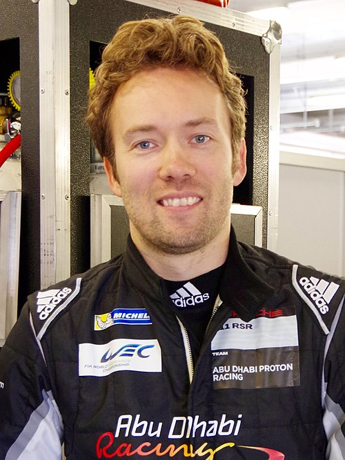
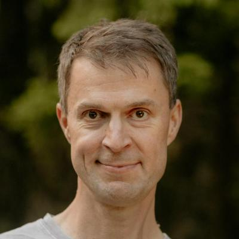

IDA Driving AI · 2026
Programming Languages
for AI, not humans
What changes when the machine is the primary author — and what an AI-first language has to look like for the code to be cheap to debug, replay, and fix.
Mark Edmondson · Holosun ApS
ailang.sunholo.com · sunholo.com
ailang.sunholo.com · sunholo.com
What the Builders Say

LT
"The python visualizer has been basically written by vibe-coding. Is this much better than I could do by hand? Sure is."
Linus Torvalds shifted
Creator of Linux & Git · Jan 2026

DH
"You can't let the slop and cringe deny you the wonder of AI. This is the most exciting thing we've made computers do since we connected them to the internet."
DHH shifted
Creator of Ruby on Rails · Jan 2026

KB
"90% of my skills dropped to $0. The leverage for the remaining 10% went up 1000x. I need to recalibrate."
Kent Beck evolved
Creator of TDD & Extreme Programming · 2023–2026

DS
"AI slop is a Denial-of-Service attack on open source maintainers." Shut down curl's bug bounty over AI-generated fake reports — but acknowledges AI finds deep bugs no tool ever could.
Daniel Stenberg nuanced
Creator of curl · FOSDEM Feb 2026

JC
"'Coding' was never the source of value. Problem solving is the core skill. AI training on open source code magnifies the value of the gift."
John Carmack
Creator of Doom & Quake · Mar 2026

SW
"Our job is not to type code into a computer. Our job is to deliver systems that solve problems." Coined "Deep Blue" for the existential dread developers feel.
Simon Willison
Co-creator of Django · Feb 2026
Explicitness Without Complexity
runtime
compiler
complex
simple
← when do choices get locked in? →
← states the AI must hold open →
 C
C
 Rust
Rust
 TypeScript
TypeScript
 JavaScript
JavaScript
 Python
Python
 AILANG
AILANG
C
Rust
TypeScript
JavaScript
Python